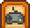

Mobile Controls
| Getting Started |
The Player |
Options | Controls | Mobile Controls |
Health | Energy | Skills | Day Cycle |
The mobile version of the game has a number of different control options, all unique to mobile. These include tap to move using the device touchscreen and an on-screen joystick.
Control styles can be selected by opening the menu and choosing the Options tab 
Inside the options menu is a dropdown which allows selection of each of the following control schemes.
Tap-to-move & Auto-Attack
This is the default control setting.
- Tap-to-move - Tap anywhere on screen and the farmer will walk to where you tapped.
- If the path to the space is blocked, it will be highlighted in red. If the path becomes blocked due to moving NPCs, pets, or farm animals, the player character may suddenly stop, try a different path, or head off in a random direction (very likely a bug).
- Keeping a finger/stylus on the device play surface will cause the character to follow the touch. Follow my finger can be used to push NPCs, pets, and farm animals out of the way but it is very literal, moving directly towards the finger without routing around blocking objects.
- Tap on items to action them. Tapping on stones, wood, stumps, boulders, rocks etc will auto-select the correct tool for the job.
- The one exception with tools is the scythe, which must be selected to use.
- Tapping on an NPC, farm animal, or pet will move you next to them and interact with them. If they move, the player character will follow them, within limits. The player character may stop and/or interact with a different NPC, farm animal, or pet, or get to the correct place, but forget to interact.
- If a giftable item is currently selected and you clicked on an NPC, then they will get that item as a gift when you reach them.
- Use care with tap to move near the edges of the play surface. It is very easy to accidentally change the selected tool, resulting in unexpected gifting or bomb usage.
- Auto-attack - When an enemy comes within attack range and a weapon, other tool, or nothing is equipped, the farmer will automatically turn to face that enemy and attack with the primary attack of the equipped weapon. If a tool is equipped or nothing is equipped and a weapon is in the inventory, the farmer will first equip the weapon; if multiple weapons are in the inventory, the farmer will equip either the most recently used weapon or the one in the highest inventory slot.
- An equipped scythe can be used for attack and will not cause the selection of an actual weapon (e.g. sword, dagger, or club).
- A slingshot will not auto-attack and the farmer will not select a weapon for auto-attack while holding one.
- The farmer will not auto-attack while holding non-tool items (e.g. bombs, food, or staircases).
- Tapping directly on an enemy will cause the farmer to walk to that enemy and then use their weapon's secondary attack. This is the only way to perform a secondary attack.
- The farmer will not attack while performing another action, including walking to a tapped location or tapped enemy.
- You can tap elsewhere to walk away while in attack range, but only between attack actions: you cannot move while the weapon is in mid-swing.
- The farmer will continue to attack until the enemy is killed or out of range. Use caution with enemies such as mummies which cannot be killed by normal weapons, since the farmer will continue to attack.
- The calculation of "within attack range" is approximate. It may trigger for unreachable enemies behind rocks in a diagonal line, and may not trigger soon enough for fast-moving enemies such as leaping slimes. When wielding a dagger, it may trigger for enemies which are close enough diagonally for a sword strike but not in line for a dagger strike.
Note that some elements of the game that require careful positioning (e.g., solving some Secret Notes or placing objects on tables) can not be completed using the default controls; temporarily switching to a control style with a movement joystick is necessary in such cases.
Tap-to-move & Attack Joystick
Uses tap-to-move for movement control.
When a weapon is selected a joystick appears bottom right. Drag the joystick up/down/left/right to face that direction and swing the weapon.
Invisible Joystick & 2 Buttons
Tap anywhere on the left half of the screen, this becomes the center of the joystick. Drag your thumb up/down/left/right to move the farmer in that direction.
- Button A () - From the bottom right half of the screen to 200 pixels in is the hit area for the 'perform action' button (right click on PC).
- Button X () - From Button A to 200 pixels in is the hit area for the 'use tool' button (left click on PC). Players can hold this button to repeat using tools/weapons.
Invisible Joystick & 1 Button
Tap anywhere on the left half of the screen, this becomes the center of the joystick. Drag your thumb up/down/left/right to move the farmer in that direction.
- Button X () - tap anywhere on the right half of the screen and release in under 0.25s to trigger the 'use tool' button (left click on PC).
- Button A () - tap anywhere on the right half of the screen and release in over 0.25s to trigger the 'perform action' button (right click on PC).
Tap-to-move & Joystick & Buttons
Tap-to-move functionality works if you tap anywhere except on the joystick or buttons.
- Joystick - use the virtual joystick on the left to move the farmer
- Left Button - This is the 'use tool' () button (left click on PC). Players can hold this button to repeat using tools/weapons.
- Right Button - This is the 'perform action' () button (right click on PC).
Tap-to-move & (Joystick & Buttons) (weapons)
Same as above Tap-to-move + Joystick & Buttons except the controls only appear when a weapons is selected, e.g., sword, dagger, club
Tap-to-move & Joystick & (Buttons) (weapons)
Same as Tap-to-move + Joystick & Buttons except the buttons only appear when a weapon is selected.
Tap-to-move & Joystick
Tap-to-move plus a joystick just for moving, no buttons.
Joystick & Buttons
Same as Tap-to-move + Joystick & Buttons except there is no tap-to-move functionality.
Show controls toggle button
This checkbox when enabled will add a toggle button to the top left of the screen.
- When the toggle button is on, the control method is set to whatever method has been selected from the drop down.
- When the toggle button is off, the controls switch to Tap-to-move & Auto-Attack.
Fishing Controls
- Bait and tackle can be attached to a fishing rod by dragging them onto the rod in inventory. Bait and tackle can be switched by dragging a different item onto the fishing rod, but there is no way to remove them.
- There is no way to direct the cast while fishing; the bobber always lands in a straight line in front of the character.
Inventory Controls
- Drag a stack from place to place to move it
- Tap the organize button to organize your inventory or the contents of a chest
- Click/hold on a stack will cause a small popup showing what the items in the stack are and their properties. The popup will have a number in the upper right corner that will start at one and start increasing the longer you hold - this allows you to move only some of the items in the stack. The longer you hold, the faster it counts, which can make it difficult to move a specific number of items if the specific number is larger than two.
History
- Mobile 1.04: Expanded control options introduced.